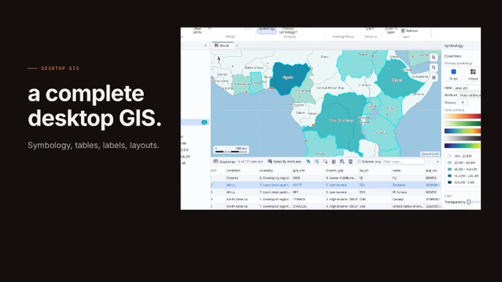

RustGIS: un SIG libre, en el navegador y con asistente de IA
Qiusheng Wu, autor de geemap y leafmap, publicó la primera versión de RustGIS: un SIG de escritorio completo que también corre en el navegador. Revisamos qué trae y dónde podría ayudarnos en el trabajo forestal.

La novedad
RustGIS v0.1.0 es un SIG gratuito y de código abierto escrito íntegramente en Rust, para hacer mapas, analizar y compartir datos geoespaciales. Funciona de forma nativa en Windows, macOS y Linux, y también en el navegador (web.rustgis.app), sin instalar nada. Los datos se quedan en tu computadora, salvo que decidas enviarlos a un modelo de IA, y cada acción es un comando que se puede automatizar.
Lo que incluye esta primera versión, según su autor:
- Datos: GeoJSON, CSV, Shapefile, GeoParquet, FlatGeobuf, PMTiles, GeoTIFF y COG, teselas web y vectoriales con estilos MapLibre, en globo 3D o en cualquier proyección.
- Cartografía: simbología temática, etiquetas sin superposición, diseños de página, series de mapas, exportación a PDF, reportes y presentaciones.
- Análisis: superposición y proximidad, flujos guiados, ModelBuilder y más de 1 000 herramientas de GeoLibre y Whitebox para terreno, hidrología y LiDAR, incluso dentro del navegador.
- Edición: ajuste (snapping), plantillas, dominios y reglas de atributos, con deshacer en cada cambio.
- Asistente de IA: preguntas o instrucciones en lenguaje natural con el modelo que elijas (Anthropic, OpenAI, Gemini, Ollama y otros).
- Automatización: cualquier comando desde la línea de comandos y complementos en WebAssembly.
- Instaladores para Windows, macOS y Linux, e interfaz en 15 idiomas.
Por qué importa para el bosque
En el sector forestal peruano, buena parte del trabajo SIG lo hacen regentes, consultores pequeños y técnicos de campo que no siempre tienen licencias comerciales ni computadoras potentes. Un SIG libre que abre en el navegador, con herramientas de terreno e hidrología y con series de mapas, cubre justo lo que piden los planes de manejo y las supervisiones: láminas repetitivas, análisis de pendiente y drenaje, y control de calidad de los datos del censo.
Cómo lo aplicaríamos
Limitaciones y cuidados
- Es una versión 0.1. Recién sale; hay que probarla con datos reales y comparar resultados con QGIS o ArcGIS antes de usarla en un expediente o informe oficial.
- Datos sensibles y IA. Las ubicaciones de árboles CITES, los datos de titulares o la información de expedientes no deben enviarse a un modelo en la nube. Usa un modelo local o no actives el asistente para esas capas.
- Formatos oficiales. Verifica que las capas exportadas respeten el sistema de coordenadas y la estructura que exige SERFOR (por ejemplo, WGS 84 / UTM 18S o 19S).